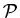

A reader with familiarity with the first order logic should have no trouble in understanding the follwoing presentation.
Extensionality:
∀x∀y[∀z[z∈x ↔ z∈y] → x=y]
This axiom states that two sets are equal when they have the same members.
Null Set:
∃x~∃y[y ∈ x]
This axiom asserts the existence of the null (empty) set.
It can be proven from this axiom and the previous axiom that such a set is
unique. We denote it by φ.
Pairs:
∀x∀y∃z∀w[w∈z ↔ [w=x ∨ w=y]]
This axiom states that given any sets x and y, there
exists
a set which has only x
and y as its members.
It can be proven that there is a unique such set for each given x and
y. We call it a pair (set) and denote it by {x,y}.
Unions:
∀x∃y∀z[z∈y ↔ ∃w[w∈x ∧ z∈w]]
This axiom states that for any given set x, there is a set y which has as its members all of the members of all of the members of x. Such a set y is called a union of x. It can be proven that there is a unique union of any set x. We denote it by ∪x.
For excample let x = {{1,2}, {3}, {4}, {5,6,7}}. Then y = ∪x = {1,2,3,4,5,6,7}.
For any sets x and y, we write ∪ { x, y} also as x ∪ y. Note that this is the union of two sets x and y as known from the naive set theory.
For any set x, a set y is called a subset of x if every member of y is a member of x. We write y ⊆ x to denote that y is a subset of x.
The next axiom states that for any set x, there is a set y which contains as its members every set whose members are also elements of x, i.e., y contains all of the subsets of x. Such a set y is called a power set of x.
Power Set:
∀x∃y∀z[z∈y ↔ ∀w[w∈z → w∈x)]
It can be proven that a set has a unique power set. We denote the power set of a set x by (x).
The next axiom asserts the existence of an infinite set, i.e., a set with an infinite number of members:
Infinity:
∃x[φ ∈ x ∧ ∀ y[y ∈ x → ∪{y,{y}}∈ x]], where φ denotes the empty set.
The Axiom of Infinity asserts that there is a set x which contains φ as a member and that anytime y is a member of x, y ∪ {y} is also a member of x. Thus, this axiom guarantees the existence of a set of the following form:
{φ, {φ}, {φ, {φ}}, {φ, {φ}, {φ, {φ}}}, ... }
The next axiom puts some restriction on the kind of members a set can have. It eliminates the Russell's paradox among others.
Regularity:
∀x[x ≠ φ → ∃ y[y ∈ x ∧ ∀ z[z ∈ x → ~z∈y]]]
This axiom asserts that every non-empty set x contains an element y which is disjoint from x. Thus it rules out among the sets the existence of x such that x = {x}. Infinitely descending chains of sets such as ... x2 ∈ x1 ∈ x0 are not allowed either.
The final axiom of ZF is the Replacement Schema. Suppose that P(x,y) is a wff (well formed formula) with x and y free, and which may or may not have other free variables. Also, let P(s,r) be the result of substituting s and r for x and y, respectively, in P(x,y). Then every instance of the following wff is an axiom:
Replacement Schema:
∀x∃!y[P(x,y → ∀u∃v∀r[r∈v ↔ ∃s[s∈u ∧ P(s,r)]]]
In English it states the following: Suppose that P(x,y) is a formula which relates each set x to a unique set y. Then given a set u, we can form a new set v (hence such a set exists) by collecting all of the sets to which the members of u are uniquely related by P.
It is called a schema because it collectively represents infinite number of axioms of the same form.